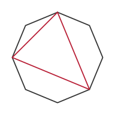

ホーム ＞ 数学A ＞ 場合の数（順列・組合せ）
正8角形の頂点から3つを選んで三角形をつくる。正8角形の辺を1本も共有しない三角形は何個できるか。
全体から「辺を共有する三角形」を引く。辺を2本共有（隣り合う3頂点）は \(n\) 個、1本だけ共有は \(n(n-4)\) 個。
\({}_{8}\mathrm{C}_3=56\) 通り。

隣り合う3頂点 \(8\) 通り。
辺 \(8\) 本のそれぞれに、残りの頂点（その辺の両端と隣り合わない）\(4\) 通り。
【答案（テストに書く形）】
答